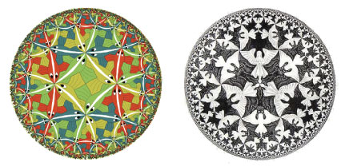
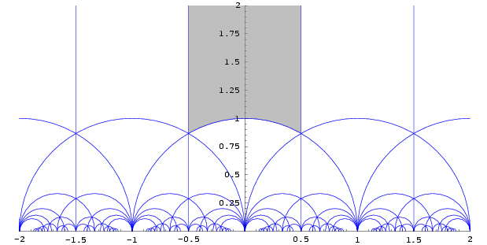
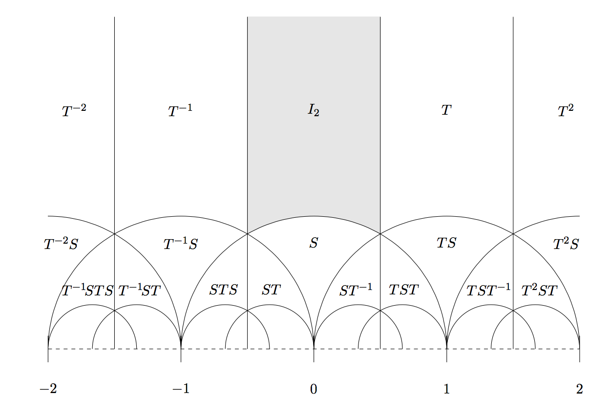
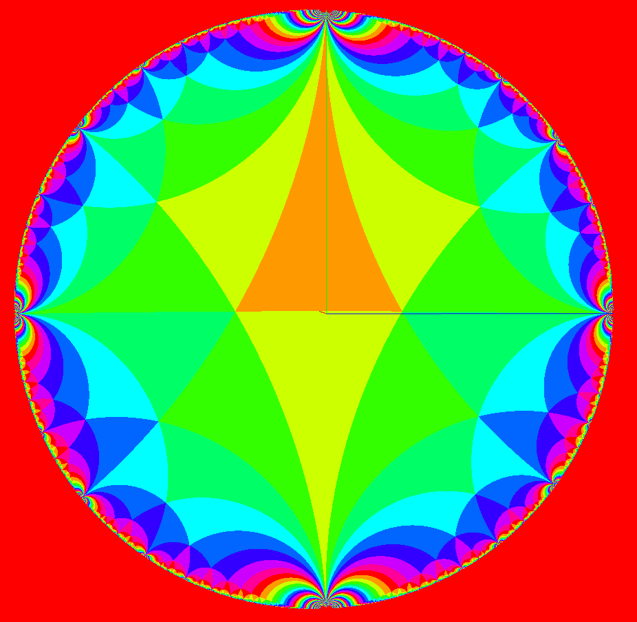

I’m interested in learning more about the modular group and this article looking into hyperbolic tessellations represents my initial efforts to collect my thoughts on the topic.
We are familiar with hyperbolic tessellations from the artwork of M.C. Escher and from numerous renderings of the Poincare Disk (which was really invented by Beltrami, not Poincaré):

The disk model is not the only model of hyperbolic space. There is also the Klein model, the hyperboloid model, and the upper half plane model, and probably some others. Let’s consider the upper half plane model. One way to look at the Poincaré half plane model is as a view on that part of complex plane where the imaginary part is positive. So we’re only considering half of the complex plane, the upper half. Here is what a tiling of the upper half plane looks like:

By Fropuff (from en wikipedia) [GFDL (http://www.gnu.org/copyleft/fdl.html) or CC-BY-SA-3.0 (http://creativecommons.org/licenses/by-sa/3.0/)], via Wikimedia Commons
To quote wikipedia: “The projective linear group PGL(2,C) acts on the Riemann sphere by the Möbius transformations. The subgroup that maps the upper half-plane, H, onto itself is PSL(2,R)”. So Möbius transformations with real coefficients preserve the upper half-plane. That means that any such transformation will keep all points that are already on the upper half-plane on the upper half plane. (And incidentally, the real numbers are mapped to themselves).
If we look at the upper half plane model this way (as the upper half of the complex plane), then when we render it on the Riemann Sphere, it looks like this:

In this depiction, the tiled portion is the upper half plane. The red hemisphere is not the upper half plane, it is the lower half plane. The green axis points to (∞, ∞i), the blue axis intercepts the sphere at (-1,0i) and the red axis intercepts the sphere at (0,-i).
The tessellation depicted above is of the modular group, PSL(2,Z), where Z indicates the set of integers. So in other words the modular group Γ is those mobius transformations with integer coefficients and unit determinant. It is a subgroup of PSL(2,R) (but not a normal subgroup).
“The modular group can be shown to be generated by the two transformations
S: z -> -1/z
T: z -> z + 1
so that every element in the modular group can be represented (in a non-unique way) by the composition of powers of S and T. Geometrically, S represents inversion in the unit circle followed by reflection with respect to the imaginary axis, while T represents a unit translation to the right.” z is a complex number of course. And as mentioned above, S and T are Möbius transforms with integer coefficients and determinant = 1.
So we can use those 2 transformations and apply them over and over. What region should we start with as our initial tile (or to use the technical terminology: what fundamental domain should we choose?). A common choice is depicted in the grey region in the upper half plane figure above. It is that region where |z| is > 1 and |Re(z)| < 1/2. The orange triangle in the spherical tiling above is the very same region.
You can view my Three.js version of this tessellation here where you can spin and zoom it as you please.
Note that we are drawing this diagram using WebGL shaders. Pixel shaders (aka fragment shaders) are called once for each pixel. In our case a pixel maps to a complex coordinate. So our code is called repeatedly and handed a different complex coordinate on each call. The pixel shader has to decide what color to use for this given pixel/complex coordinate. So it has to do the Möbius transforms in reverse. (I discuss this issue in greater detail here). This shows how the tesselation works [3]:

Thus, in code, the logic is:
if |z| < 1 then apply S-1
else if Re(z) < -.5 apply T, else T-1
(remember we’re doing everything backwards because we’re working with pixel shaders).
By a suitable placement of the camera you can get a view that looks just like the Poincaré disk:

This provides an intuition for believing that there is a simple mapping from the upper half plane model to the disk model, and indeed there is, it is called the Cayley transform.
Rational Numbers, Q
In case it wasn’t clear, the rim of the upper half plane is the projective real line (the real line plus a point at infinity). The upper half plane h = { x + iy : y > 0}. The triangles in the tesselation are called ideal triangles since they are each bounded by three sides and have two endpoints in h but one “endpoint” not in h: the third endpoint is either a rational number on the x-axis or is ∞.
“Note that any member of the modular group maps the projectively extended real line one-to-one to itself, and furthermore bijectively maps the projectively extended rational line (the rationals with infinity) to itself, the irrationals to the irrationals, the transcendental numbers to the transcendental numbers, the non-real numbers to the non-real numbers, the upper half-plane to the upper half-plane, et cetera.”[6]
In the same article it mentions that the modular group never takes an irreducible fraction to a reducible one, which explains its relevance to Farey graphs and Ford circles which I explain in my next post.
Thus given our choice of fundamental domain, the points where the tessellations of the fundamental domain hit the boundary are those points s ∈ R ∪ {∞} that are fixed by a parabolic element of Γ. The points are precisely Q ∪ {∞}, where Q stands for the set of rational numbers. The parabolic element is the transform T above. You can tell it is parabolic because the Trace of the 2×2 matrix corresponding to the Möbius transform for T is 2.
For z ∈ SL2(R), z is parabolic if z can be conjugated to T . Any parabolic element z generates an infinite discrete subgroup of SL2(R) consisting solely of parabolic elements; and z fixes no points of H and a unique point of P1(R). The parabolic points for SL2(Z) are P1(Q). [4]
The fundamental domain in orange above has one point on the real axis. Each transformation in the tessellation moves that point around the rim and generates a new rational number.
Hyperbolic Tesselations
So what does this have to do with hyperbolic tesselations? We’ve explained how a special set of Möbius transformations, those that generate the modular group, can tile the upper half plane. The upper half plane is a model of hyperbolic geometry. This was the famous insight that came to Poincaré in a flash:
“At that moment which I put my foot on the step the idea came to me, without anything in my former thoughts seeming to have paved the way for it, that the transformations I had used to define the Fuscian functions were identical with those of non-Euclidean geometry” L’Invention Mathématique, Henri Poincaré
Or as wikipedia says: “Möbius transformations are also isometries of the hyperbolic plane“. This seems a strange statement. Möbius transformations are conformal on the complex plane: they preserve angles, but the don’t preserve lengths. Isometry means ‘length preserving’. This is possible because in hyperbolic space, in marked contrast to Euclidean space, equal angles guarantee that corresponding side lengths are equal in the hyperbolic metric.[1] A hyperbolic triangle’s size is determined by its angles.
Algebraic vs Geometric
The matrices [0,1,-1,0] and [1,1,1,0] generate SL(2Z). Both matrices have determinant = 1. That means they are volume and orientation preserving.
The analogous Möbius transforms:
S: z -> -1/z
T: z -> z + 1
generate the modular group. They are not volume preserving in the upper half plane but they are in the hyperbolic plane: all tiles are the same size in the hyperbolic plane.
And finally….
As a final note, since we’re working with the Riemann sphere we can do all sorts of fun mappings from 360 video footage, as I detailed elsewhere. So piping video through the tessellation gives you:
Video 5 from Robert Woodley on Vimeo.
—————-
[1] http://www.mathematica-journal.com/issue/v9i3/contents/ModularGroup/ModularGroup.pdf
[2] https://math.dartmouth.edu/~m125x15/quat-book-chap29-072315.pdf
[3] http://www.math.uconn.edu/~kconrad/blurbs/grouptheory/SL(2,Z).pdf
[4] https://homepages.warwick.ac.uk/~masiao/modforms/examples2.pdf
[5] http://www.math.cornell.edu/~hatcher/TN/TNch1.pdf
[6] https://en.wikipedia.org/wiki/Modular_group
 Crib Sheet...
Crib Sheet...